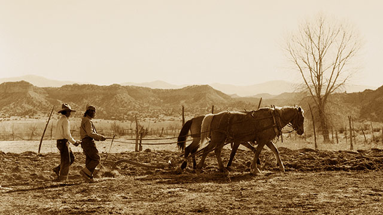
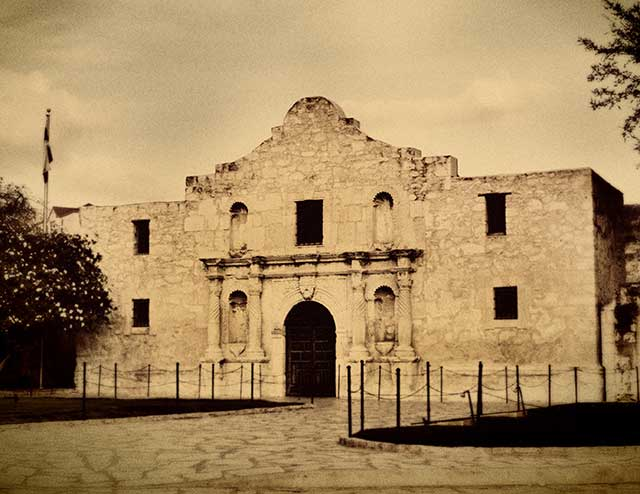

Nuestra Historia
Los Pollos Hermanos es un restaurante familiar informal de rápido crecimiento fundado por Gus Fring
y su socio comercial Max Arciniega. Juntos, los "hermanos pollo" se hicieron un nombre
para ellos y su restaurante de pueblo pequeño usando sabores y especias auténticos para
hacer el pollo más sabroso al sur de la frontera.


Desde entonces, Los Pollos Hermanos ha abierto nuestras puertas en los Estados Unidos, sirviendo
familias como la tuya. ¡Y esperamos un crecimiento continuo!